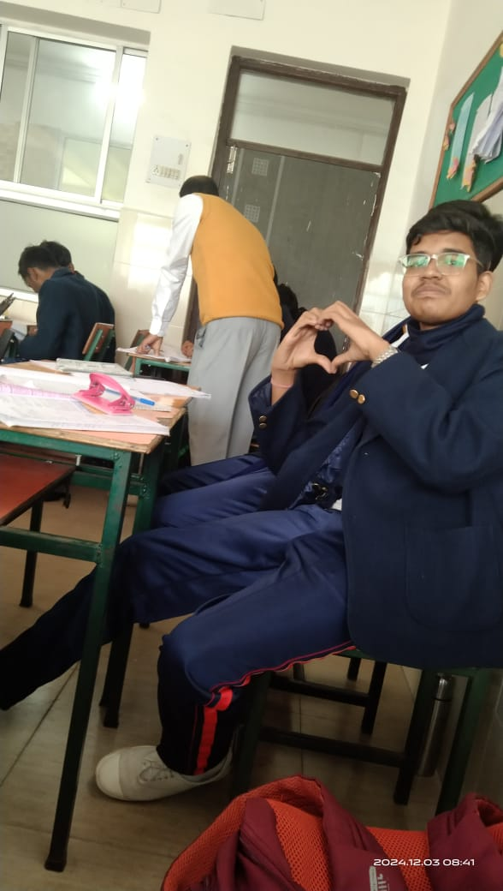
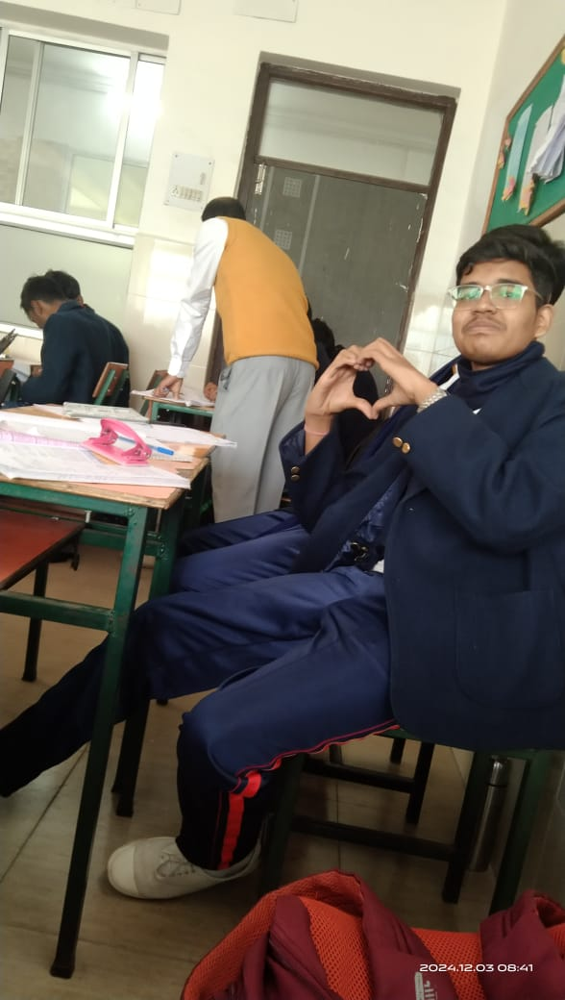
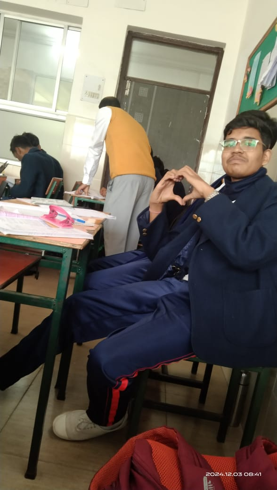

Photos
 

Aryan is a boy (very doubtable but anyways). He studies in Chinmaya Vidyalaya, Class- 12 F . Don't fall prey to his cuteness, he might appear harmless but beware he is the biggest, most worst , most diabolical molester the world has ever seen. If you go close to him there's a 99% chance you will get molested. If you think you can reverse molest him then you are very wrong...... he is immune. He molests on a multispecies level, not only humans , innocent animals and insects get molested too. If you see him at night and he is aware of your presence .... then mind me -YOU CAN'T RUN .... the only thing you can do is PRAY.... cause you are already COOKED.
+91-9123252442
